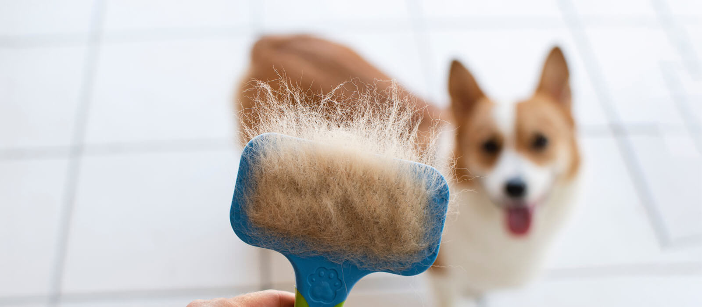

Algemene informatie over de Corgi.
Hoe herken ik een Corgi?

Het ras standaard van de corgi is dat de vacht niet te veel witte vlekken bevat. Wel kan een corgi alle andere mogelijke kleuren vacht hebben. Het hoofd van de Corgi heeft een typische, vosachtige vorm. Ook heeft de Corgi puntige oren die recht op het hoofd staan. Een ander belangrijk uiterlijk kenmerk is de korte pootjes. Dit komt voort uit een genetische afwijking, bij andere (normaalbenige) hondenrassen hoort dit niet voor te komen.
Karakteristieke eigenschappen en opvoeding.
Door zijn korte pootjes lijkt de corgi misschien niet op een typische herdershond, maar schijn bedriegt: deze honden hebben alle karaktereigenschappen van een goede veehoeder. Zo zijn ze actief en slim. De Corgi's halen veel plezier uit het leren van kunstjes. Daarnaast zijn ze ook heel atletisch. Je zou het misschien niet verwachten, maar deze kleine hond heeft hetzelfde uithoudingsvermogen als de grote herdershonden. Vandaag wordt dit hondenras minder vaak ingezet als herdershond. Nu is de Welsh Corgi vooral een gezelschapsmaatje. Daardoor heeft de corgi ook andere belangrijke karaktereigenschappen ontwikkeld, zoals zijn vrolijke karakter en liefdevolle aard. Wel kunnen ze soms koppig of ondeugend zijn.
Voeding en verzorging.
De vacht van een Corgi moet regelmatig gekamd worden. Hiermee voorkom je het risico op klitten. Corgi's hebben ook de gewoonte om snel aan te komen. Het is dus van belang dat je jouw hond voldoende beweging geeft en het leukste is natuurlijk als je dit samen kunt doen. Zo krijgt jouw hond niet alleen de beweging die hij nodig heeft, maar krijgen jullie ook een sterkere band.
Er zijn ook verschillende oefeningen die goed zijn voor de mentale gezondheid van een hond. Veel gedragsproblemen kunnen verholpen worden door een combinatie van lichaamsbeweging en mentale oefeningen. Voorbeelden van mentale oefeningen zijn: trucjes, iets verstoppen of commando's. Dit kan gecombineerd worden met parcours voor een optimaal effect. Door de hond deze oefeningen te laten doen, zal hij zelf na moeten denken.
Er zijn verschillende diëten online te vinden voor jouw Corgi. Voordeel hiervan is dat jouw hond de voedingsstoffen binnenkrijgt die hij nodig heeft. Je hond houdt hierdoor een gezond gewicht en komt niet ongewenst veel kilo's aan. Ook zorg je hierdoor dat de kans op de aandoeningen kleiner worden doordat jouw hond alle benodigde voedingsstoffen binnenkrijgt.